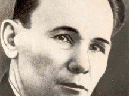
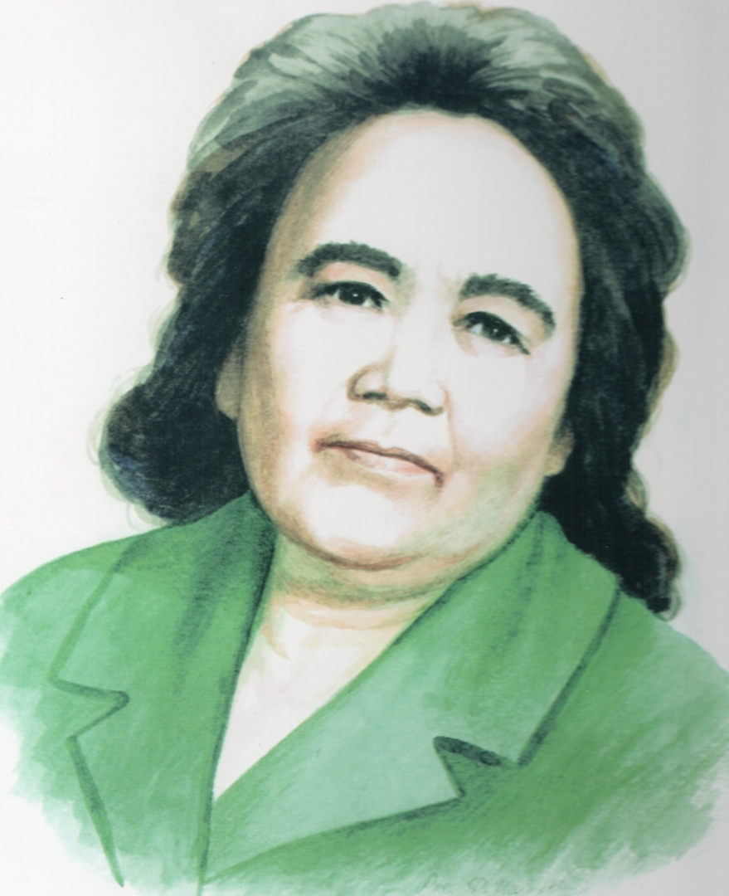

С развитием края, развивались и писатели республики, внося свой вклад в писательское дело Башкирии и делая основу следующему поколению литераторов. Давайте же познакомимся с ними.
Сагит Агиш. Родился в 1904 году в деревне Исянгильдино в Александровском районе нынешнего Оренбургской области. Образование получил в медресе «Хусаиния» в Оренбурге, потом окончил педагогический техникум. Первые произведения Агиша Сагита были написаны в 1923 году, а напечатаны в 1925. Кроме того, он часто писал стихи: первый сборник стихотворений «Наш смех» («Беҙҙең көлөү»), напечатанный в 1928. В 30-е годы увидели свет рассказы: «Гнедко», «Применительно к условиям» («Шартына килһен»), «В доме муэдзина» («Мөдзин йортонда»), «Джигиты» («Егеттәр») и многие другие.
В годы ВОВ Сагит, следуя патриотическому движению народов, пишет «Всадник Ильмурза» («Атлы Илмырҙа»), «Ахмадулла». Не забывал Агиш и о своих корнях: в 1950 году выходит роман «Фундамент» о жизни башкирской деревни.
За свои писательские заслуги Сагит Агиш награждён орденом Ленина (высшая награда в Советском Союзе), «Знаком Почёта», также посмерно (1975) государственной премией Башкирской АССР имени Салавата Юлаева.
Зайнаб Биишева. Зайнаб Абдулловна Биишева родилась 15 января 1908 года в деревне Туембетово Кугарчинского района Башкирской АССР в семье учителя. Рано осталась сиротой: мать умерла, когда дочери было всего три года, через восемь лет ушёл отец. Начальное образование Биишева получила в деревне Ибраево, немного позже поступила в Оренбургский Институт народного образования. Здесь выходят её первые стихи и рассказы. После окончания института сначала работала учителем в школе, затем - в редакциях газет и журналов, в книжном издательстве, на радиовещании.
В 1942 году выходит первая книга Зайнаб «Мальчик-партизан», с тех пор ей было выпущено более 65 книг. Зайнаб Биишева является классиком башкирской литературы, драматургом, поэтессой, писательницей. Она писалась в самых разных журналах, пробуя себя в самых разных жанрах литературы и прославляя силу человеческой личности. За свои произведения Биишева стала лауреатом премии Салавата Юлаева, а также была удостоена тремя орденами «Почёта».
Анатолий Генатулин. Родился 20 апреля 1925 года в деревне Уразово в Учалинском районе нынешнего Башкортостана. Генатулин рано потерял родителей, но это не помешало ему получить начальное образование в своей деревенской школе, а потом поступить в ФЗУ в Ташкенте. Как удивительно бы это не звучало: русский язык Анатолий начал изучать только в 16 лет.
В начале Великой Отечественной войны Анатолий Генатулин работал на станках фрезеровщиком, а в 1943 году после 3-месячного обучения стал советским снайпером. Генатулин принял участие в военных действиях под Ленинградом (10 июля 1941 года по 9 августа 1944 года) и на Карейском перешейке (недалеко от Ленинграда), участвовал во взятии Кенигсберга, завершил войну уже на территории Германии в составе гвардейской артиллерийской дивизии. Был награждён орденами Отечественной войны 1-й степени, Славы 3-й степени и боевыми медалями.
В начале 50-х под впечатлением чтения Э. М. Ремарка, Л. Толстого и А. Чехова стал писать рассказы о войне, которые, однако, из-за открытого изображения страданий, жестокости и трагизма не принимались к публикации. Первая публикация состоялась в 1961 в журнале «Дружба народов». В 1969 издал первый сборник рассказов. Таким образом, Анатолий Генатулин зарекомендовал себя как талантливый военный писатель. Произведения начали переводиться на его родной башкирский язык только 2000-ых годах.
Анатолий Генатулин свои произведения посвящал темам войны, в которой принял участие и был впоследствии награждён. Заслуга писателя - не только писательский талант, его рассказы отличаются других тем, что показывают реальные события фронта, все эмоции, которые пришлось пережить защитникам...
Нугуман Мусин. Родился в 17 июля 1931 года в деревне Кулгунино Ишимбайского района. Начальное образование получил в своей школе, поле окончания которой улился в Стерлитамакском учительском институте. Работал учителем, после чего инспектором народного образования. А уже с 1953 года работал в органах республиканской периодической печати, в Союзе писателей республики, в книжном издательстве "Китап". Печатается с 1952 года.
Своей основной задачей Мусин считает защиту природы: огромное количество произведений писателя посвящено теме "природа и человек" в современном мире. Труд работников леса, его защита и защита природы в целом повествуют такие произведения Нугумана Мусина, как дилогия "Вечный лес", роман "Белый олень на Синь-горе" и его продолжение "Выходи в путь на заре".
Произведения башкирского писателя отличают драматизм сюжета, психологическая мотивированность поступков героев. За проделанный труд Мусин награждён почётным орденом Салавата Юлаева, а также орденами Дружбы народов и «За заслуги перед Республикой Башкортостан».
Заключение. Нельзя недооценить вклад, внесённый писателями республики в развитие литературы, ведь именно они продолжили развитие башкирских жанров в Серебренном веке литературы.
 Анатолий Генатулин. Родился 20 апреля 1925 года в деревне Уразово в Учалинском районе нынешнего Башкортостана. Генатулин рано потерял родителей, но это не помешало ему получить начальное образование в своей деревенской школе, а потом поступить в ФЗУ в Ташкенте. Как удивительно бы это не звучало: русский язык Анатолий начал изучать только в 16 лет.
Анатолий Генатулин. Родился 20 апреля 1925 года в деревне Уразово в Учалинском районе нынешнего Башкортостана. Генатулин рано потерял родителей, но это не помешало ему получить начальное образование в своей деревенской школе, а потом поступить в ФЗУ в Ташкенте. Как удивительно бы это не звучало: русский язык Анатолий начал изучать только в 16 лет. Нугуман Мусин. Родился в 17 июля 1931 года в деревне Кулгунино Ишимбайского района. Начальное образование получил в своей школе, поле окончания которой улился в Стерлитамакском учительском институте. Работал учителем, после чего инспектором народного образования. А уже с 1953 года работал в органах республиканской периодической печати, в Союзе писателей республики, в книжном издательстве "Китап". Печатается с 1952 года.
Нугуман Мусин. Родился в 17 июля 1931 года в деревне Кулгунино Ишимбайского района. Начальное образование получил в своей школе, поле окончания которой улился в Стерлитамакском учительском институте. Работал учителем, после чего инспектором народного образования. А уже с 1953 года работал в органах республиканской периодической печати, в Союзе писателей республики, в книжном издательстве "Китап". Печатается с 1952 года.